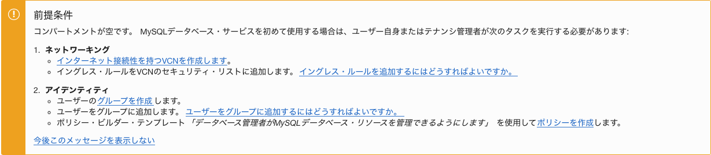
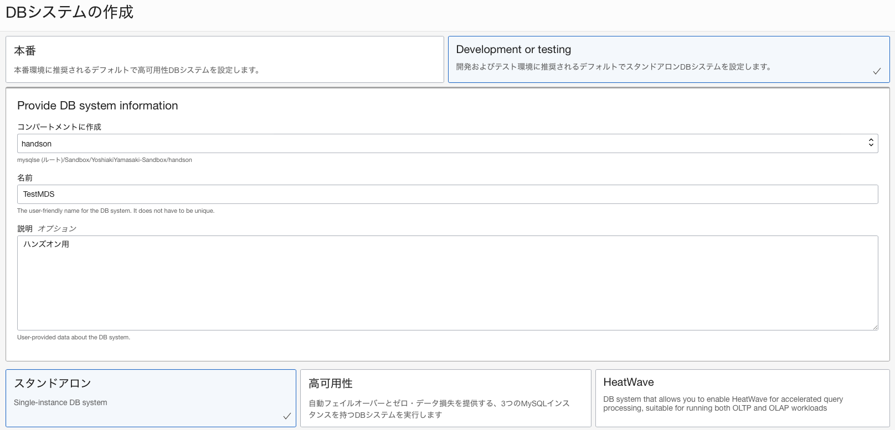
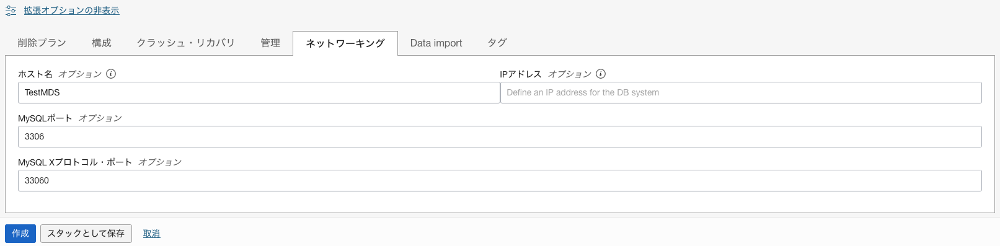
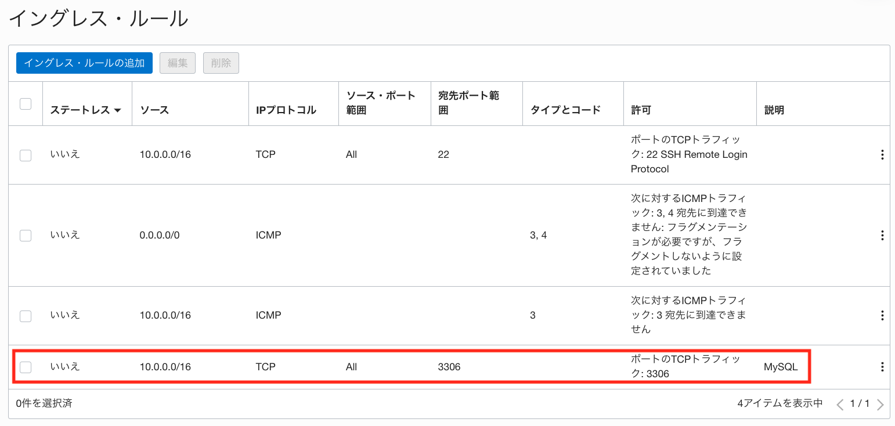

Oracle Cloud Infrastructure では、MySQL Database Service(MDS)が利用できます。MDSはAlways Freeの対象ではないため、使用するためにはクレジットが必要ですが、トライアルアカウント作成時に付与されるクレジットでも使用可能です。
このチュートリアルでは、コンソール画面からMDSのサービスを1つ作成し、コンピュート・インスタンスにMySQLクライアントとMySQL Shellをインストールして、クライアントからMDSへ接続する手順を説明します。
所要時間 : 約25分 (約15分の待ち時間含む)
前提条件 :
- Oracle Cloud Infrastructure の環境(無料トライアルでも可) と、管理権限を持つユーザーアカウントがあること
- OCIコンソールにアクセスして基本を理解する - Oracle Cloud Infrastructureを使ってみよう(その1) を完了していること
- クラウドに仮想ネットワーク(VCN)を作る - Oracle Cloud Infrastructureを使ってみよう(その2) を完了していること
- インスタンスを作成する - Oracle Cloud Infrastructureを使ってみよう(その3) を完了していること
注意 : チュートリアル内の画面ショットについては Oracle Cloud Infrastructure の現在のコンソール画面と異なっている場合があります。
目次：
- 1. MySQL Database Service(MDS)とは?
- 2. MDSの作成
- 3. セキュリティリストの修正(イングレス・ルールの追加)
- 4. MySQLクライアント、MySQL Shellのインストール
- 5. 作成したMDSの確認
1. MySQL Database Service(MDS)とは?
MySQL Database Service(MDS)は、MySQL開発チームによるMySQLのマネージドサービスです。オンプレミスのMySQLと100%の互換性があり、MySQL開発ベンダーであるオラクル社からのサポートも受けられます。
MDSではセキュリティの観点から、パブリックIPアドレスを持てない仕様になっています。そのため、このチュートリアルでは、別途コンピュート・インスタンスにMySQLクライアントをインストールして、コンピュート・インスタンス上のクライアントからMDSへ接続する手順まで説明します。
2. MDSの作成
MDSを作成します。本チュートリアルではデフォルトの構成でMDSを作成していますが、シェイプやストレージサイズ、バックアップ設定などをカスタマイズすることも可能です。
- コンソールメニューから データベース → MySQL → DBシステム を選択します。

- DBシステムの作成 ボタンを押します。この際、左下の リスト範囲 でリソースを作成したいコンパートメントを選択していることを確認して下さい。ここでは「handson」コンパートメントを使用しています。

※ MySQL Database Serviceを利用するためにはOCIユーザーに適切なポリシーを設定する必要があります。必要なポリシーは 前提条件 部分で説明されているように、ポリシー・ビルダー・テンプレートを使用して作成できます。なお、Administratorsグループに所属するユーザーはこれらのポリシーも満たしているため、本チュートリアルでは、このポリシーの設定手順は割愛しています。
 -
立ち上がった DBシステムの作成 ウィンドウで「Development or testing(開発もしくはテスト)」を選択した後で、以下の項目を入力します。なお、「本番」と「Development or testing(開発もしくはテスト)」では、デフォルトで設定される値に違いがあります。詳細は、各項目にマウスオーバーすることで表示されます。
- 名前 - 任意の名前を入力します。ここでは「TestMDS」と入力しています。
- 説明 - このMDSの説明を入力します。ここでは「ハンズオン用」と入力しています。(入力は任意です)
- ユーザー名 - MySQL Databaseの管理者ユーザーのユーザー名を指定します。ここでは「root」と入力しています。(セキュリティの観点からは任意のユーザー名を指定することを推奨します)
- パスワード - MySQL Databaseの管理者ユーザーのパスワードを指定します。パスワードは8文字から32文字までの長さで、大文字、小文字、数字および特殊文字をそれぞれ1つ以上含める必要があります。
- パスワードの確認 - パスワードを再入力します。
- ネットワーキングの構成 - 本チュートリアルでは、「TutorialVCN」、「プライベート・サブネット-TutorialVCN（リージョナル）」を使用します。

- ホスト名 - 任意の名前を入力します。ここでは「TestMDS」と入力しています。
※ページ下部にある「拡張オプションの表示」をクリック後、「ネットワーキング」タブをクリックして入力欄を表示します。
また、以下の項目は必要に応じて変更します。
- 「スタンドアロン」、「高可用性」、「HeatWave」 - MDSを1台のみで構成する場合は「スタンドアロン」を選択します。MDSを高可用性構成で構成する場合は「高可用性」を選択します。「高可用性」を選択した場合、グループ・レプリケーションによる高可用性構成が組まれるため、内部的には3台のMDSが構成されます。
「HeatWave」については、「その10 - MySQLで高速分析を体験する」を参考にして下さい。 - 配置の構成 - 可用性ドメイン(AD)、フォルト・ドメイン(FD)を指定できます。
(現時点で東京リージョン、大阪リージョンは、ADが1つだけであるため、AD2、AD3は選択できません) - ハードウェアの構成 - 「シェイプの変更」をクリックして、より高スペックなシェイプを選択できます。サポートされているシェイプについては、こちらのドキュメントを参照して下さい。また、「データ・ストレージ・サイズ(GB)」部分でストレージサイズを変更できます。ストレージサイズは後から拡張もできます。
- Configure backup plan(バックアップの構成)
- 「自動バックアップの有効化」にチェックが入っている場合、1日に1回自動的にMDSのバックアップが取得されます。バックアップは、バックアップウインドウで設定した時間に取得されます。デフォルトの自動バックアップ保持期間は7日に設定されていますが、1日〜35日の間で任意の日数に変更できます。また、自動バックアップ以外に、任意のタイミングで手動でバックアップを取得することもできます。
MDSのバックアップの詳細についてはこちらのドキュメントを参照して下さい。 - 「ポイント・イン・タイム・リストアを有効にします」にチェックが入っていない場合は、障害発生時にバックアップ取得時点にしか復旧できません(バックアップのリストアしかできません)。バックアップ取得以降に更新されたデータを復元する必要がある場合は、チェックをつけたままにして下さい。
- 「Select backup window」にチェックを入れることで、自動バックアップの取得時間帯を指定できます。時間はUTCで指定することに注意して下さい。
- 「自動バックアップの有効化」にチェックが入っている場合、1日に1回自動的にMDSのバックアップが取得されます。バックアップは、バックアップウインドウで設定した時間に取得されます。デフォルトの自動バックアップ保持期間は7日に設定されていますが、1日〜35日の間で任意の日数に変更できます。また、自動バックアップ以外に、任意のタイミングで手動でバックアップを取得することもできます。
以下は「拡張オプションの表示」をクリック後に表示されるメニューです。
拡張オプションの詳細についてはこちらのドキュメントを参照して下さい。- 削除プラン
- 「削除保護」にチェックを入れると、この設定を変更するまでMDSを削除できなくなります(コンソール上から「削除」のメニューがグレーアウトされます)。
- 「自動バックアップの保持」にチェックを入れると、このMDSを削除する時にそれまでに取得されていた自動バックアップを保持できます。チェックを入れていない場合は、MDS削除時に紐づいている自動バックアップは削除されます。
- 「最終バックアップが必要」にチェックを入れると、このMDSを削除する時に自動的にバックアップが取得されます。
- 構成
- クラッシュ・リカバリ - 「クラッシュ・リカバリの有効化」のチェックを外すことで、クラッシュ・リカバリを無効化でき、書き込み処理のパフォーマンスを向上できます。クラッシュ・リカバリを無効化すると耐障害性が下がるため、このチェックは通常運用時には外してはいけません。大量データをロードする場合などに一時的に設定を変更することを想定した機能です。
- 管理 - メンテナンス・ウインドウの開始時間を任意の時間に設定できます。MDSでは、週に1回メンテナンス・ウインドウで設定された時間帯にメンテナンスが行われる可能性があります。時間はUTCで指定することに注意して下さい。
- ネットワーキング
- IPアドレス：任意のIPアドレスを設定可能です。
- MySQLポート：MySQLサーバーとの通信に使用するポートをデフォルトの3306から任意のポートに変更できます。
- MySQL Xプロトコル・ポート：MySQLサーバーとXプロトコルを使用して通信する時に使用するポートをデフォルトの33060から任意のポートに変更できます。
- Data import
- 「PAR source URL」に適切なURLを指定することで、MDS作成後に自動的に高速にデータをロードできます。この機能を使用すると、クラッシュ・リカバリが無効化された状態でデータがロードされるため、通常よりも高速にデータをロードできます。
この機能を使用する場合は、事前にMySQL Shellのダンプユーティリティを使用して取得したダンプデータをOCIのオブジェクトストレージに配置する必要があります。そして、「既存のバケットに対するPAR URLを作成するには、ここをクリックします。」をクリックし、そのオブジェクト・ストレージ・バケットを指定してPAR URLを作成します。
- 「PAR source URL」に適切なURLを指定することで、MDS作成後に自動的に高速にデータをロードできます。この機能を使用すると、クラッシュ・リカバリが無効化された状態でデータがロードされるため、通常よりも高速にデータをロードできます。
- タグ - 任意のタグを設定できます。タグをつけることで、コストトラッキング等に活用できます。
- MDSが作成中になるのでしばらく待ちます。概ね15分程度で作成が完了しステータスがアクティブに変わります。


- ページ左下の リソース → エンドポイント をクリックして、ホスト名、IPアドレスを確認しておきます。

3. セキュリティリストの修正(イングレス・ルールの追加)
このチュートリアルで作成したMDSと通信するためには、TCP/IPによる3306ポートに対する通信を許可する必要があります。そのため、セキュリティリストのイングレス・ルールに設定を追加します。
-
コンソールメニューから ネットワーキング → 仮想クラウドネットワーク を選択し、作成済みのVCNを選択します。本チュートリアルではTutorialVCN です。またこれ以降はVCNが TutorialVCN である前提で説明を記述しています。

- プライベート・サブネット-TutorialVCN をクリックします。

- プライベート・サブネット-TutorialVCNのセキュリティ・リスト をクリックします。

- イングレス・ルールの追加 をクリックします。

-
立ち上がった イングレス・ルールの追加 ウィンドウで、以下の項目を入力し イングレス・ルールの追加 ボタンを押します。
- ソースCIDR - 「10.0.0.0/16」と入力します。
- 宛先ポート範囲 - 「3306」と入力します。
- 説明 - 「MySQL」と入力します。(入力は任意です)

- 3306ポートに対するイングレス・ルールが追加されたことを確認します。

4. MySQLクライアント、MySQL Shellのインストール
コンピュート・インスタンスにMySQLクライアントとMySQL Shellをインストールします。MySQLチームが提供しているyumの公式リポジトリをセットアップした後で、yumでインストールします。(本チュートリアルを実行するだけであればMySQL Shellのインストールは必須ではありませんが、MDSへのデータ移行時などでMySQL Shellが便利なので、合わせてインストールしておきます)
-
インスタンスを作成する - Oracle Cloud Infrastructureを使ってみよう(その3)で作成したコンピュート・インスタンスに接続し、以下のコマンドを実行します。これにより、MySQLチームが提供しているyumの公式リポジトリがセットアップされます。
sudo yum install https://dev.mysql.com/get/mysql80-community-release-el8-4.noarch.rpm -
RHEL8系のOSの場合、デフォルトで有効になっているMySQLモジュールを無効化する必要があるため、以下のコマンドを実行します。詳細な説明はこちらのドキュメントを参照して下さい。
sudo yum module disable mysql -
以下コマンドを実行し、MySQLクライアントをインストールします。
sudo yum install mysql-community-client -
以下コマンドを実行し、MySQL Shellをインストールします。
sudo yum install mysql-shell
5. 作成したMDSの確認
MDSにサンプルデータベースとしてworldデータベース、world_xデータベースを構築し、SQLを実行することで、MySQLサーバーが構築できていることを確認します。
-
以下のコマンドを実行してworldデータベース、world_xデータベースを構築するためのSQLスクリプトをダウンロードして解凍します。
wget https://downloads.mysql.com/docs/world-db.zip unzip world-db.zip wget https://downloads.mysql.com/docs/world_x-db.zip unzip world_x-db.zip -
ダウンロードされたworldフォルダ内、world_xフォルダ内のSQLスクリプトを実行してサンプルデータベースを構築します。mysqlコマンドラインクライアントを使ってMDSへ接続し、sourceコマンドを使ってSQLスクリプトを実行します。実行例は以下の通りです。ユーザー名はMDSの管理者ユーザー名に、ホスト名は確認したホスト名に置き換えて下さい。
(“-u”オプションでユーザー名を、”-h”オプションでホスト名を指定します)実行コマンド例(コピー＆ペースト用)
mysql -u root -p -h TestMDS.sub01311142371.tutorialvcn.oraclevcn.comsource world-db/world.sqlsource world_x-db/world_x.sqlSHOW DATABASES;use world;SHOW TABLES;use world_x;SHOW TABLES;SELECT * FROM world.city LIMIT 5;SELECT * FROM world_x.city LIMIT 5;exit実行例
[opc@testvm1 ~]$ mysql -u root -p -h TestMDS.sub01311142371.tutorialvcn.oraclevcn.com Enter password: Welcome to the MySQL monitor. Commands end with ; or \g. Your MySQL connection id is 21 Server version: 8.0.32-cloud MySQL Enterprise - Cloud Copyright (c) 2000, 2023, Oracle and/or its affiliates. Oracle is a registered trademark of Oracle Corporation and/or its affiliates. Other names may be trademarks of their respective owners. Type 'help;' or '\h' for help. Type '\c' to clear the current input statement. mysql> source world-db/world.sql Query OK, 0 rows affected (0.00 sec) <略> mysql> source world_x-db/world_x.sql Query OK, 0 rows affected (0.00 sec) <略> mysql> SHOW DATABASES; +--------------------+ | Database | +--------------------+ | information_schema | | mysql | | performance_schema | | sys | | world | | world_x | +--------------------+ 6 rows in set (0.00 sec) mysql> use world; Database changed mysql> SHOW TABLES; +-----------------+ | Tables_in_world | +-----------------+ | city | | country | | countrylanguage | +-----------------+ 3 rows in set (0.00 sec) mysql> use world_x; Database changed mysql> SHOW TABLES; +-------------------+ | Tables_in_world_x | +-------------------+ | city | | country | | countryinfo | | countrylanguage | +-------------------+ 4 rows in set (0.01 sec) mysql> SELECT * FROM world.city LIMIT 5; +----+----------------+-------------+---------------+------------+ | ID | Name | CountryCode | District | Population | +----+----------------+-------------+---------------+------------+ | 1 | Kabul | AFG | Kabol | 1780000 | | 2 | Qandahar | AFG | Qandahar | 237500 | | 3 | Herat | AFG | Herat | 186800 | | 4 | Mazar-e-Sharif | AFG | Balkh | 127800 | | 5 | Amsterdam | NLD | Noord-Holland | 731200 | +----+----------------+-------------+---------------+------------+ 5 rows in set (0.01 sec) mysql> SELECT * FROM city LIMIT 5; +----+----------------+-------------+---------------+-------------------------+ | ID | Name | CountryCode | District | Info | +----+----------------+-------------+---------------+-------------------------+ | 1 | Kabul | AFG | Kabol | {"Population": 1780000} | | 2 | Qandahar | AFG | Qandahar | {"Population": 237500} | | 3 | Herat | AFG | Herat | {"Population": 186800} | | 4 | Mazar-e-Sharif | AFG | Balkh | {"Population": 127800} | | 5 | Amsterdam | NLD | Noord-Holland | {"Population": 731200} | +----+----------------+-------------+---------------+-------------------------+ 5 rows in set (0.00 sec) mysql> exit
これで、この章の作業は終了です。
この章では、TestMDS というMySQL Database Serviceを1つ作成し、コンピュート・インスタンスから接続確認をしました。MDSの構成は変更していませんが、用途に応じて構成を変更したり、シェイプやバックアップ設定なども変更できます。
MDSの構成変更やシェイプの変更、バックアップ設定の変更なども是非試してみて下さい。